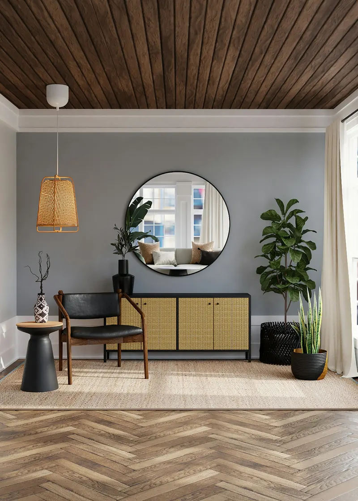
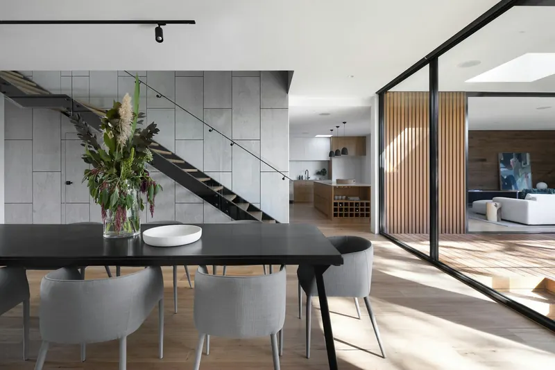

Projects · 02 · Shophouses · Renovations
Shophouse inDaun Penh
- Type
- Shophouses · Renovations
- Where
- Daun Penh, Phnom Penh
- Size
- 1960s shophouse, four floors on a narrow front
- Scope
- Renovation of the whole house, light well, new stair, joinery
- Status
- Invented for this concept site

The brief
A 1960s shophouse with a print shop on the ground floor and the owner's family above. Dark in the middle, hot under the roof, one steep stair, and the family had to walk through the shop to get home.
What we changed
- Opened a light well from the roof down to the living room.
- A new timber stair beside the light well, gentler than the old one.
- Kept the old cement tiles in the shop. Lifted, cleaned and relaid the broken ones.
- Separate doors for the shop and the home, so the family can come in after closing.
- A ventilated roof over the top floor, so the bedrooms cool down at night.
Studio team: Founder and lead designer, project architect, site coordinator. No client names, on this site or any other.
Before and after
Before: one steep stair, rooms in a row and a dark middle on every floor. The top floor stored paper and was too hot to use.

Materials
- Khmer handmade tiles
- Reclaimed hardwood
- Lime plaster
- Terrazzo, poured on site
See them all in the materials library, or come and touch the samples at the studio.
Next project
Flat by the river